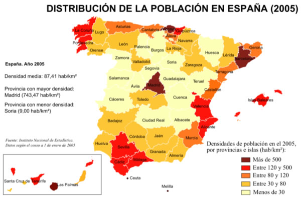

A partir dels arxius proporcionats, quan es carregui la pàgina:
border-collapse:collapsetd l'estil border: 1px solid chocolate i padding: 0.3remtd de dins del tbody la classe celes parell i a les imparells la classe imparellhover a les cel·les de la primera fila| Comunidad Autónoma | Pob.(2006) | % (2006) |
| Comunidad Foral de Navarra | 601.874 | 1,35% |
| País Vasco | 2.133.684 | 4,77% |
| Canarias | 1.995.833 | 4,46% |
| Cantabria | 568.091 | 1,27% |
| Comunidad de Madrid | 6.008.183 | 13,44% |
| Cataluña | 7.134.697 | 15,96% |
| Andalucía | 7.975.672 | 17,84% |
| Comunidad Valenciana | 4.806.908 | 10,75% |
| Galicia | 2.767.524 | 6,19% |
| Castilla y León | 2.523.020 | 5,64% |
| Castilla-La Mancha | 1.932.261 | 4,32% |
| Región de Murcia | 1.370.306 | 3,06% |
| Aragón | 1.277.471 | 2,86% |
| Extremadura | 1.086.373 | 2,43% |
| Principado de Asturias | 1.076.896 | 2,41% |
| Islas Baleares | 1.001.062 | 2,24% |
| La Rioja | 306.377 | 0,69% |
| Ceuta | 75.861 | 0,17% |
| Melilla | 66.871 | 0,15% |
La densidad de población en España es aproximadamente 88,59 hab/km². Es menor que la mayoría de países de la Unión Europea y su distribución geográfica es muy irregular. La población se concentra en las zonas de costa cantábrica-atlántica-mediterránea y en torno a la región metropolitana de Madrid. En el resto del Área geográfica interior se registra el problema de la despoblación siendo más acusada en zonas de Castilla-León y Navarra. 